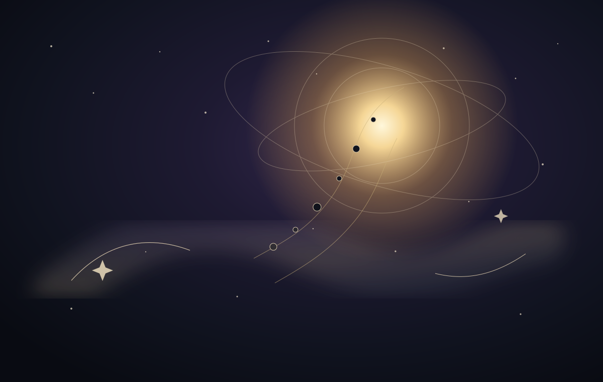

AN ENCYCLOPEDIA OF SACRED & UNSEEN WORLDS
Across the
visible veil.
Explore beings, lokas, heavens, hidden realms, sacred presences and recorded encounters — without collapsing one culture into another.
Every parallel is labeled by source type. Similarity is never presented as identity.
THE LIVING INDEX
Beings & presences
A navigation system broad enough for devas, fair folk, jinn, kami, nāgas, angels, yōkai and more — while preserving the vocabulary and worldview of each tradition.
No records match that search yet.
CELESTIAL LENS
Parallels beneath
the same sky
Parallel, not equivalent. Select a celestial body to compare historically attested planetary deities and mythic celestial figures across traditions.
SELECT A CELESTIAL BODY
Attraction · fertility · desire
Traditional astral links remain distinct from later occult correspondences.
CROSS-CULTURAL HUB
Venus
Method: a shared planet, eclipse phenomenon, solar identity or lunar identity can justify comparison. A loose personality resemblance cannot.
COSMIC ATLAS · SAMPLE SCHEMA
The lokas
Rather than pretending there is one universal Hindu cosmology, Veilarium can store multiple textual schemas and show exactly which source supports each arrangement.
ENCOUNTER INDEX
How traditions
describe contact
The site can document practices and narratives without presenting supernatural outcomes as established fact. Living devotional practice is never thrown into the same bucket as modern occult reconstruction.
PROVENANCE BY DESIGN
Beautiful enough to share.
Precise enough to cite.
This starter build uses original Veilarium interface illustrations rather than copied fantasy art. The production archive can add museum and manuscript imagery only with an explicit rights record: Public Domain, CC0, CC BY, licensed, or original.
ORIGINAL ART
IMAGE RIGHTS FIELD
PRIMARY SOURCE FIELD
COPY CITATION